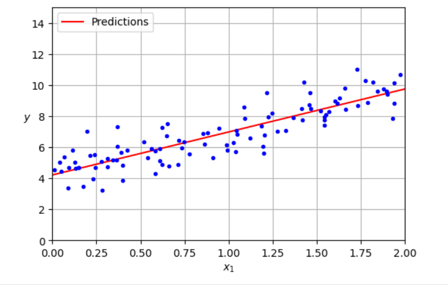

This page showcases all of the articles I've published covering Machine Learning, Data Science, & Quantitative Finance topics.
February 2025

The article serves as a practical guide to understanding stationarity in time series analysis, explaining its importance, detection methods, and transformation techniques to improve model reliability in finance and machine learning.

Article serving as an intuitive introduction to Markov models with applications.
Case study in using machine learning models for the task of fraud detection.
My summary of the research paper Deep Learning in Neuroimaging Data Analysis by Lev Kiar Avbersek and Grega Repovs.
Article discussing the different types of Neural Network architectures and their use cases.

This article discusses the long and intertwined history between math and machine learning to answer the question: Just how important is the math?

This article serves as a breakdown and reference guide for all the linear algebra needed to undertsand ML concepts: From Systems of Equations to Eigenvectors and everything in between.

This article goes into depth on possibly the simplest and widest used Machine Learning algorithm.